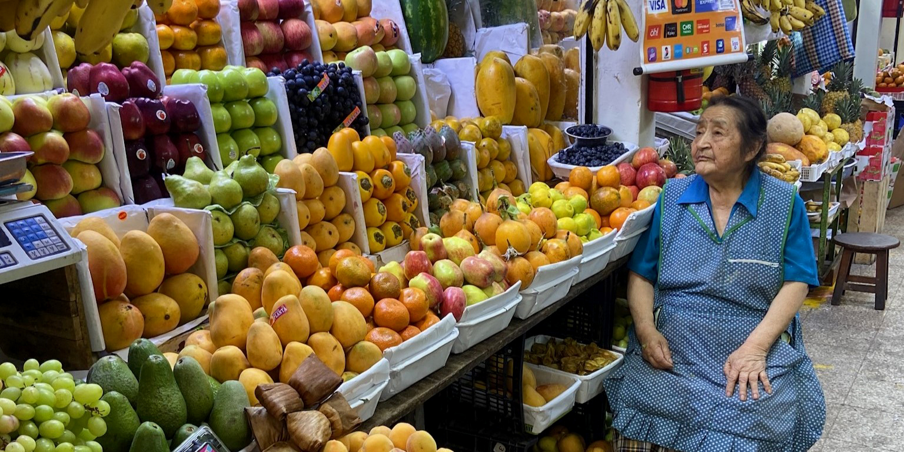
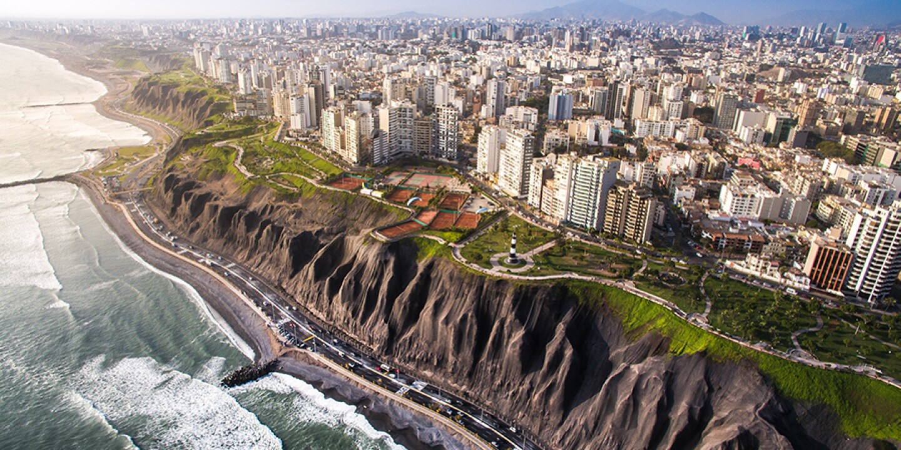

De laatste dag op Peruaanse bodem — een volledige dag om de bruisende hoofdstad te verkennen voor de lange vlucht naar huis.
Na de avonturen in de Andes en de Inca-wereld sluit de reis af in Lima — een bruisende metropool van 11 miljoen inwoners die gastronomiehoofdstad van Zuid-Amerika wordt genoemd. Een laatste dag vol kleur, smaak en stadsleven.


Na een vroege ochtendvlucht vanuit Cusco landen we in Lima. Na inchecken in het hotel is de rest van de dag volledig vrij.
Jullie hebben een volledige dag om deze bruisende stad verder te verkennen — de indrukwekkende kliffen van Miraflores, de levendige buurten Barranco en Larcomar, de befaamde ceviche-restaurants waarvoor Lima wereldwijd bekend staat, of gewoon genieten van de boulevard langs de Stille Oceaan en de ondergaande zon boven het water. Een waardig afscheid van een onvergetelijk land.
En dan...
Op 16 augustus vertrekt de KLM-vlucht om 17:30 vanuit Lima naar Amsterdam. Tot de volgende keer, Peru!
Terug naar het overzicht